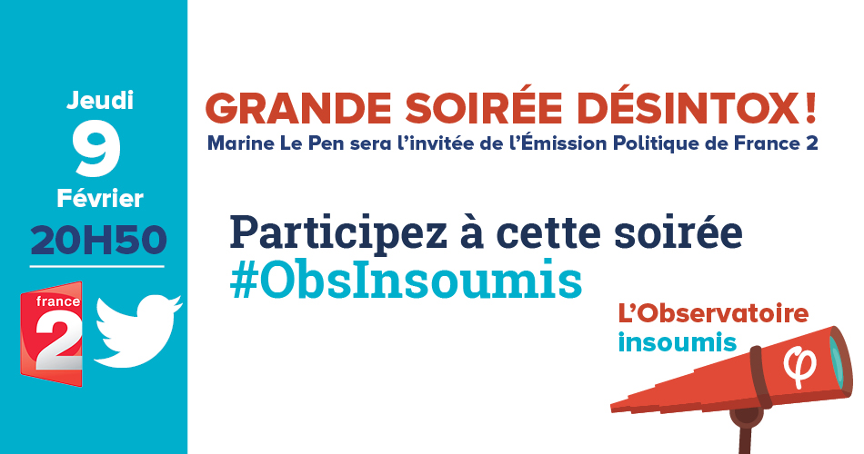

Ce jeudi 9 février à 20H50, Marine Le Pen est invitée de l’Emission Politique sur France 2. Pendant cette « Grande soirée désintox », l’Observatoire insoumis décryptera ses propositions, en vous proposant des argumentaires, des visuels et des petites vidéos.

Participez sur #Obsinsoumis !
Recharger la page pour voir les dernières informations